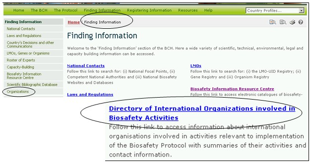

عنوان الموقع على الشبكة: http://bch.cbd.int/database/organizations/
يعرض الطابع العالمي النطاق المتعدد التخصصات للبروتوكول قاعدة عريضة من الأطراف المؤثرة من أجل تنفيذ البروتوكول، بما يتجاوز أطراف الاتفاق. وتحتفظ البوابة المركزية لغرفة تبادل معلومات السلامة الأحيائية بقاعدة بيانات بالمنظمات المعنية بشكل ما بالبروتوكول. وتُقدم هذه المعلومات للمساعدة على تيسير تبادل المعلومات بشأن جوانب البروتوكول والخبرات في تنفيذه.
ويمكن الوصول إلى آلية البحث عن المعلومات بشأن المنظمات من قائمة الاختيارات المنسدلة الخاصة بإيجاد المعلومات على شريط التصفّح، أو من الوصلة في قائمة الاختيارات اليسرى لصفحة إيجاد المعلومات أو من الوصلة في نصّ دليل المنظمات الدولية العاملة في أنشطة السلامة الأحيائية في الصفحة ذاتها.

صورة 111
وتسمح آلية البحث في هذه الصفحة للمستعملين بالوصول إلى المعلومات عن المنظمات العاملة بأنشطة تتصل بتنفيذ البروتوكول. وهي تشمل ملخصات لأنشطة هذه المنظمات ومعلومات عن الاتصال بها.
وفي صفحة البحث في دليل المنظمات العاملة في أنشطة السلامة الأحيائية يوجد سبعة اطر تؤمن لتحسين البحث في قاعدة البانات. ولكل واحد منهم هنالك قائمة منسدلة تسمح باختيار المعايير المطلوبة. التركيب الاجمالي لقائمة الخيارات المنسدلة هي الفقرة الاولى على رأس قائمة الخانة. الزر الموجود على جهة اليمين من كل اطار يسمح للمستخدم بتفعيل عدة اختيارات. عندما يكون المستخدم في اسلوب الاختيارات المختلفة، من الممكن ان يضاف معايير مختلفة للاختيارات من خلال الضغط على المعيار المناسب والضغط على مفتاح (Ctrl).

صورة 112
الإطار 1 {اسم المنظمة} يعرض خياراً على المستعمِل بأن يُدخل اسم المنظمة.

صورة 113
الإطار 2 {نقطة الاتصال} يسمح للمستعمل بأن يبحث عن اسم عائلة الشخص المحدّد المسؤول في المنظمة.

صورة 114
الإطار 3 {نوع المنظمة} يسمح للمستعمل بتضييق البحث الى فئة من المنظمات او اكثر.

صورة 115
الإطار 4 {اختيار بلد} يسرد جميع أسماء البلدان في قائمة اختيارات منسدلة، لكي يتسنى للمستعملين اختيار السجلات من بلد محدد.

صورة 116
الإطار 5 {اختيار مجموعة بلدان} يسرد مجموعات البلدان في قائمة اختيارات منسدلة ليتسنى للمستعملين اختيار مجموعة محددة من البلدان من أجل إجراء بحث. قائمة مجموعة البلدان تتضمن اهم المجموعات الجغرافية و السياسية للبلدان وتسمح لتضييق نطاق البحث بالسجلات المقدمة من قبل اعضاء المجموعة/المجموعات المختارة.

صورة 117
الإطار 6 {تاريخ السجل} يسمح للمستعمل بأن يضيق نطاق البحث إلى التاريخ الذي أُدخل فيه السجل في قاعدة بيانات غرفة تبادل معلومات السلامة الأحيائية. وتعرض قائمة الاختيارات المنسدلة عدداً من الخيارات لتحديد البحث بالسجلات التي تم تقديمها بالمهلة الزمنية المحددة (على سبيل المثال "اليوم الفائت، الشهر الفائت، السنة الفائتة، الخ).

صورة 118
الإطار 7 {بحث الكلمة الدليلية} ايُعرض فرصة لاستخدام الكلمات الدليلية لتضييق نطاق البحث. ويستطيع المستعمل أن يستخدم تكوين جملة الكلمات الدليلية المعيارية (و/أو) للبحث مع استخدام عدة كلمات أو أجزاء أساسية من الكلمات (استيراد أو تصدير). البحث الذي يستخدم الكلمات الدليلية يصدر نتائج بالسجلات التي تتضمن النص الذي يتم البحث عنه فقط وليس المفردات التي لم يتم ادخالها (على سبيل البحث عن "الذرة" ينتج قائمة بالسجلات التي تحوي فقط كلمة "الذرة" ولكن ليس "Corn" أو "Zea mays").

صورة 119
ويوجد في أسفل آلية البحث ثلاث ازرار لانتاج قائمة بالسجلات. ويسمح زر ابحث الآن Search Now للمستعمل بأن يشغّل برنامج بحث استناداً إلى معايير البحث المختارة في أُطُر آليات البحث. نتائج البحث تفرز ابجديا مبدئيا وفقا لاسم البلد. ويسمح اختيار تصفح جميع الوثائق Browse all records (في أسفل آلية البحث) للمستعمل أن يحصل على قائمة بجميع السجلات الموجودة في قاعدة البيانات هذه.

صورة 120
وتوجد في صفحات نتائج البحث Search Results آلية تصنيف أعلى قائمة السجلات. وهذه يمكن استعمالها لتصنيف السجلات وفقاً للمعايير المحدّدة لتلك الفئة من المعلومات. وتذكّر أن معايير التصنيف تتغيّر عندما يختار المستعمل معايير مختلفة للبحث.
صورة 121
مثال: يرغب مستعمِل في تحديد المنظمات التي تعمل مع المزارعين وبهذا يدخل كلمة مزارع أو الزراعة في آلية البحث بالكلمات الدليلية. وتشير النتائج إلى عدد من المنظمات مع وصلات إلى المزارعين. ولتضييق نطاق البحث على المشاريع المتصلة بالقطاع الخاص، يختار المستعمِل كلمة صناعة في إطار نوع المنظمات.

صورة 122

صورة 123